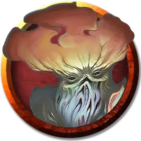

Взрослый миконид
Myconid Adult
Среднее Растение, законно-нейтральное

Класс Доспеха 12 (природный доспех)
Хиты 22 (4к8 + 4)
Скорость 20 футов
| мод | спас | ||
|---|---|---|---|
| СИЛ | 10 | +0 | +0 |
| ЛОВ | 10 | +0 | +0 |
| ТЕЛ | 12 | +1 | +1 |
| мод | спас | ||
|---|---|---|---|
| ИНТ | 10 | +0 | +0 |
| МДР | 13 | +1 | +1 |
| ХАР | 7 | −2 | −2 |
Чувства тёмное зрение 120 футов, пассивное Восприятие 11
Опасность 1/2 (100 опыта)
Бонус мастерства +2
Среда обитания Подземье
Особенности
Споры страдания. Если миконид получает урон, все остальные микониды в пределах 240 футов чувствуют его боль.
Слабость на солнце. Находясь на солнечном свету, миконид совершает с помехой проверки характеристик, броски атаки и спасброски. Миконид умирает, если проводит больше 1 часа под прямыми солнечными лучами.
Действия
Кулак. Рукопашная атака оружием: +2 к попаданию, досягаемость 5 футов, одна цель. Попадание: Дробящий урон 5 (2к4) плюс урон ядом 5 (2к4).
Усмиряющие споры (3/день). Миконид выпускает споры на одно существо, которое видит в пределах 5 футов. Цель должна преуспеть в спасброске Телосложения Сл 11, иначе станет ошеломленной на 1 минуту. Цель может повторять этот спасбросок в конце каждого своего хода, оканчивая эффект на себе при успехе.
Споры взаимопонимания. От миконида расходятся споры в радиусе 20 футов. Эти споры обходят углы и воздействуют только на существ с Интеллектом 2 и выше, которые не являются нежитью, конструктами и элементалями. Попавшие под действие существа могут телепатически общаться друг с другом, если находятся в пределах 30 футов друг от друга. Эффект длится 1 час.
Описание
См. дополнительно статью: "Бестиарий: Микониды"